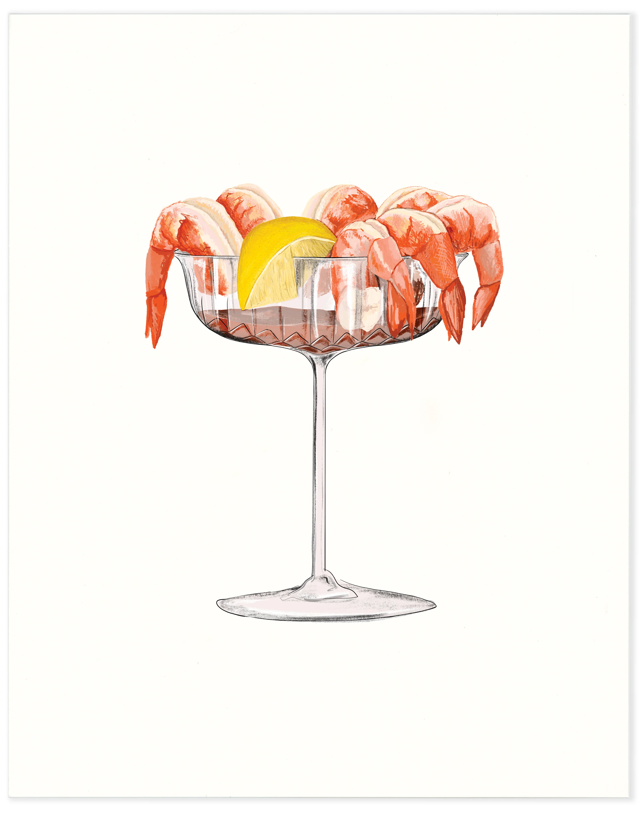
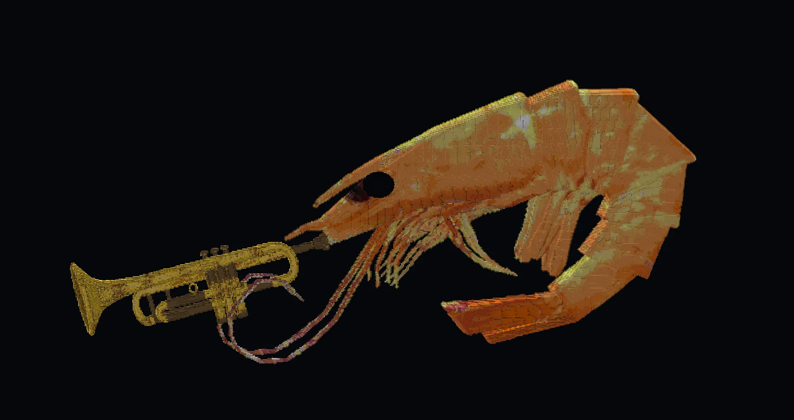
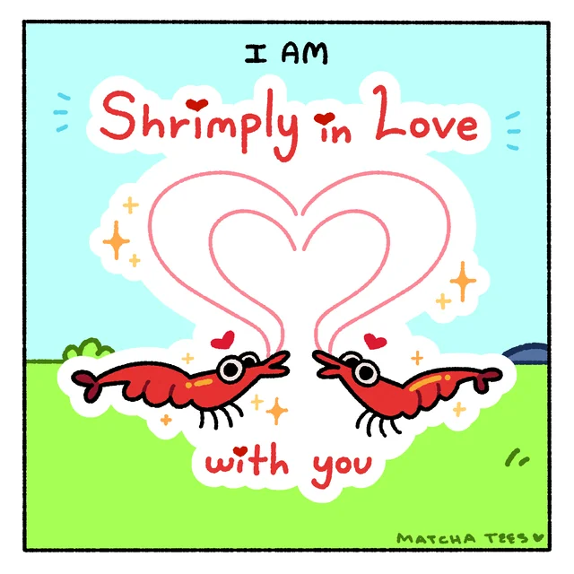
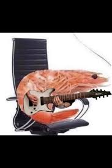

THE NEWS
may 10th, 1993:
A more serious blog post from us: in rememberance of all we've lost on this day every year. did you know shrimps are the most eaten seafood? its a sad, sad world we live in.

april 2nd, 1993:
exciting news: a fourth shrimp is briefly joining our trio! matt is a shrimp-renowned trumpet player from shrimpcago who will be going on tour with us this year for our WIMPY SHRIMP TOUR!

this is matthew. see you next time we have an update!
february 14th, 1993:
happy valentimes day! we are planning on releasing our NEW ALBUM titled "shrimply in love" in stores WEDNESDAY! this is our most experimental cd yet. here's something special to get you excited...our album cover!

that's all from us, have a lovely day everyone!
march 20th, 1993:

mike got a new bass! he wanted to share it with you all :D it's a finnder p-bass, top of the line stuff. it came just in time for us to make our big announcement NEXT MONTH! see you then!